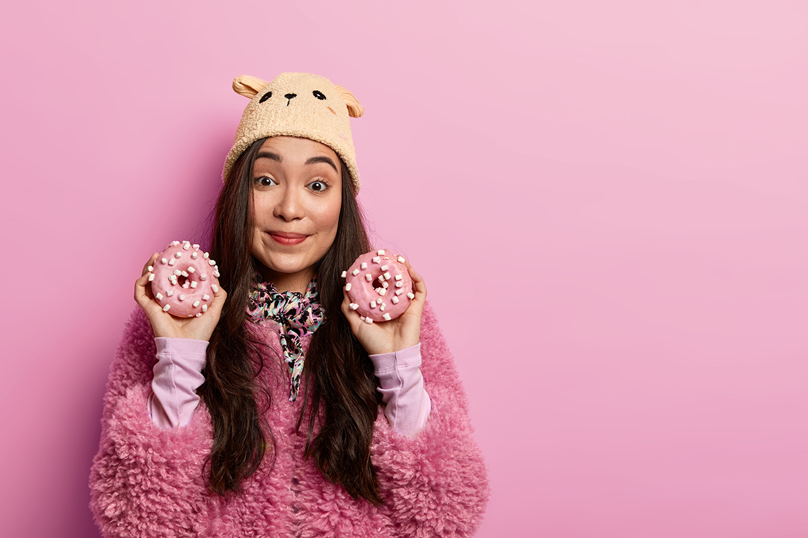
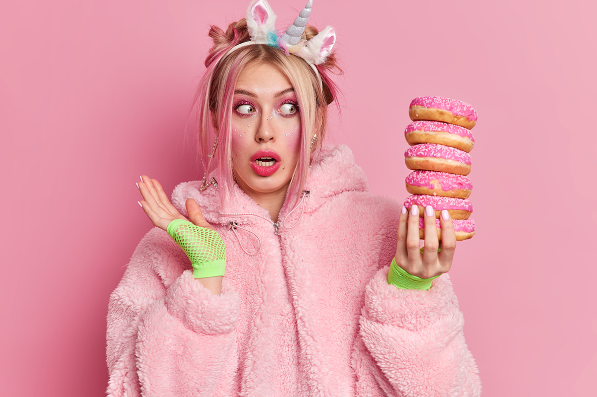
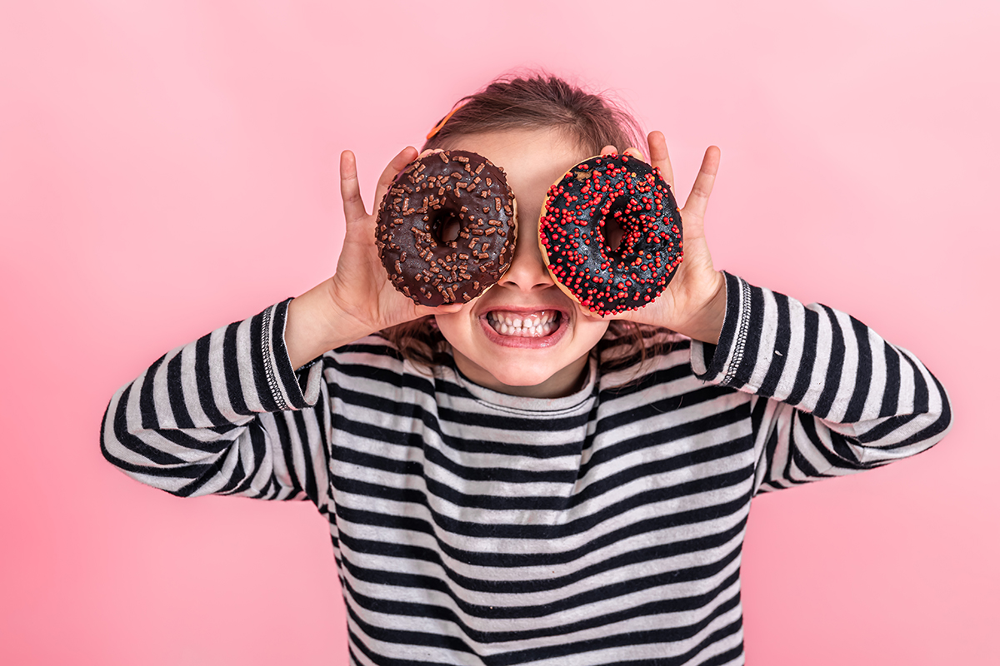

Emma
Emma façonne les douceurs comme des petits nuages sucrés. Chaque éclat de chocolat et chaque meringue devient un rêve à croquer sous ses mains délicates.

Lola
Lola peint la pâtisserie de mille couleurs et textures. Chaque dessert est un tableau, un voyage gourmand qui émerveille les yeux et titille les papilles.

Chloé
Chloé est notre petite muse des saveurs. Son regard curieux et son sourire malicieux garantissent que chaque bouchée est un pur bonheur à savourer.